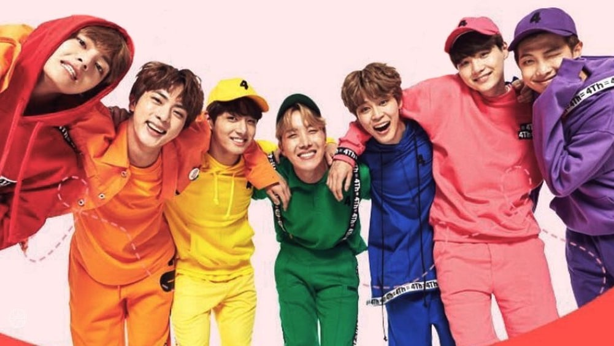
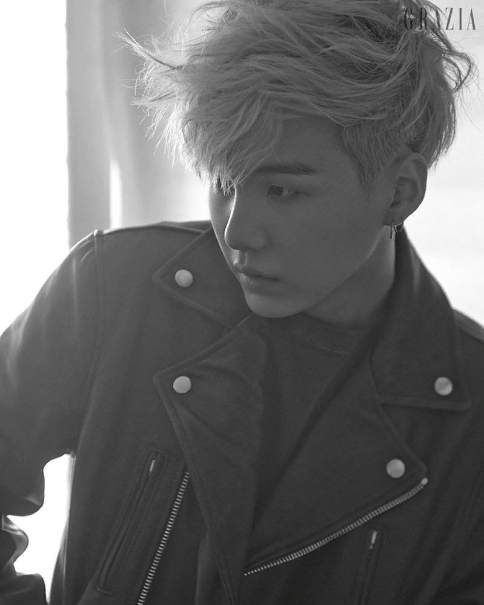
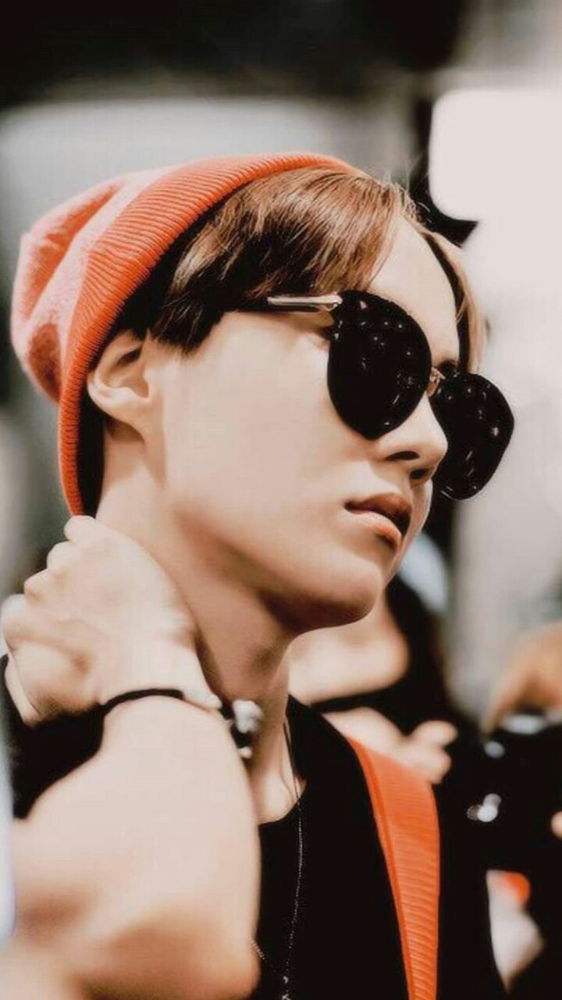

| Псевдонім | Справжнє ім'я | Дата народження | Позиція в групі |
|---|---|---|---|
| RM | Кім Нам Джун | 12.09.1994 | Лідер, головний репер, автор пісень |
| Jin | Кім Сок Джин | 04.12.1992 | Вокаліст, віжуал(лице групи) |
| Suga | Мін Юн Гі | 09.03.1993 | Ведучий репер, композитор |
| J-Hope | Чон Хо Сок | 18.02.1994 | Головний танцюрист, ведучий репер, саб-вокаліст |
| Jimin | Пак Чі Мін | 13.10.1995 | Вокаліст, танцюрист |
| V | Кім Те Хьон | 30.12.1995 | Вокаліст, танцюрист |
| JungKook | Чон Чон Гук | 01.09.1997 | Головний вокаліст, танцюрист, макне |
Перед дебютом у 2013 році Rap Monster (RM) вже був андеграундним репером і випустив декілька неофіційних треків, у тому числі з участю Zico (Зіко) з гурту Block B.
Джин (найстарший учасник) навчався в Konkuk University, де вивчав акторську майстерність, доки його не зустріли на вулиці і не запропонували прийти на прослуховування.

Шуґа був андеграундним репером у Теґу. Він не планував бути відомим, просто хотів писати музику та заробляти гроші. Сім'я Юнгі не підтримувала його захоплення музикою.

До приходу в Big Hit Чімін навчався у Пусанській старшій школі мистецтв (Busan High School of Arts) як найкращий студент у сучасному танці, але потім він був переведений до Корейської старшої школи мистецтв (Korea Arts High School). Йому пройти прослуховування порадив вчитель.

Ві прийшов на прослуховування щоб підтримати друга, але в результаті сам став трейні і був також переведений до Корейської старшої школи мистецтв (Korea Arts High School). Ві та Чімін - однолітки та є найкращими друзями.

Джей-Хоуп був частиною вуличної танцювальної команди під назвою NEURON (Нейрон), активно брав участь у «підпільній» танцювальній сцені, був задіяний в різних поєдинках і змаганнях. До діяльності в групі Джей-Хоуп не займався репом, тому мусив починати все спочатку.

Наймолодший учасник групи — Чонгук — прослуховувався у декількох агенствах, але врешті вибрав Big Hit, тому що захоплювався RM-ом. Чонгук все ще навчався в школі, коли став учасником групи, він успішно закінчив її у 2017 році.